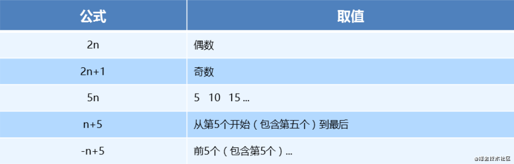
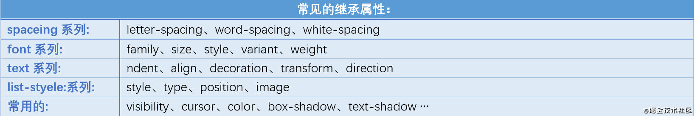
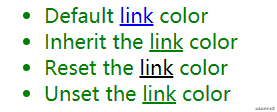
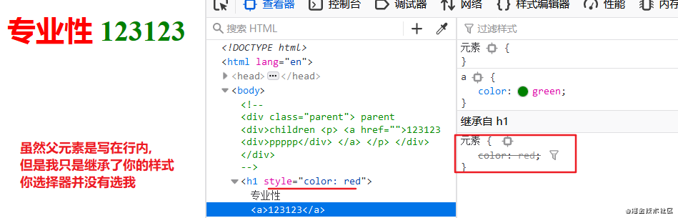

三大特性
css大三特性是css最重要的部分，可以说如果了解了这三大特性就对css撑握了一半，对于属性只不过是记不记的住的事，而这个是重在理解。
基本选择器
- 类名：
.box - 标签:
div - 属性:
input[type="eamil"] | a[href*="http://www.beige.world" - ID:
#box
- 类名：
伪类选择器
- 结构伪类:
:nth-child(n) | :nth-of-type(n) | :hover - 伪元素:
::before | ::after
- 结构伪类:
组合选择器
相邻兄弟 A + B
普通兄弟 A ~ B
子选择器 A > B
后代选择器 A B
基本选择器
1 | /* 匹配包含title属性的a标签 => <a title> */ |
伪类选择器
结构伪类
nth-child(n) | nth-of-type(n)
1 |
|
CSS
1 | // 第一个li => <li>1</li> |
它俩的区别
- nth-child 选择父元素里面的第几个子元素，不管是第几个类型
- nth-of-type 选择指定类型的元素
下面讲讲nth-child()括号中的公式，这个算是这个选择器的亮点了。

注意⚠：本质上就是选中第几个子元素
n 可以是数字、关键字、公式
n 如果是数字，就是选中第几个
常见的关键字有 even 偶数、odd 奇数
常见的公式如下(如果 n 是公式，则从 0 开始计算)
但是第 0 个元素或者超出了元素的个数会被忽略
对于这里面的公式平常也用不到太复杂的，我说下我的技巧：nth-child(3n + 3); 这里的n可以看做几个为一组，3可以看做选这组的第几个。
例： nth-child(5n + 3) ：5个为一组，选一组中的第三个。 对于”-“号就表示选择的是前面的。
组合选择器
组合选择器本质上就是通过连接符来对两个选择器进行组合
子选择器 A > B
后代选择器 A B
上面这两我就不说了，相信大家都用烂了。主要说说下面这两个。
相邻兄弟 A + B
普通兄弟 A ~ B
1 |
|
1 | ```css |
组合选择器可以用于：hover伪类操纵自己包含的子元素及以外的元素。举个例子
1 | <div id='a'>元素1 |
1 | #a:hover > #b{....} |
上面这两选择器在做一些特效页的时候应该是会用到的。
1 | ```html |
样式
布局样式
1 | <style> |
定义了一个animation动画
1 | @keyframes textAnimation { |
悬浮在盒子设置样式
1 | .img-box:hover { |
- flex(弹性布局）
- transform: translate3D rodate3D
- animation(设定动画)
- 3D or 透视(perspective)
这里需要注意在使用伪类Hover的注意点，在使用他影响子级元素的时候尽量将选择器写全。
使用Hover时的一些细节。
结构比较简单
flex类名用于布局实现重置和水平居中，box: 绿色盒子；center: 紫色盒子 inner: 橙黄色盒子
1 | <div class="box flex"> |
我们用了一个:hover让鼠标虚浮的时候让盒子变红
1 | .box:hover div { |
这段代码只让center盒子变红了，inner为什么没有变红呢？？？
因为CSS选择器的优先级！
我们在实现的时候一般都会像下面这样写吧，这个时候使用伪类选择器改变元素样式的时候就要注意选择器优先级的问题了。
1 | .box .center { |
这段代码的优先级比 .box .center高，所以他也就只能覆盖它了。
1 | .box:hover div { |
相信我们很多人如果在写鼠标悬浮大盒子让最里面的inner盒子变色的时候，都会这么写吧：
1 | .box:hover .inner { |
有用吗？没用！
注意⚠: 优先级还是没有.box .center .inner高。
层叠性
所谓层叠性是指多种CSS样式的叠加。是浏览器处理冲突的一个能力,如果一个属性通过两个相同选择器设置到同一个元素上，那么这个时候一个属性就会将另一个属性层叠掉
原则：
- 样式冲突，遵循的原则是就近原则。 那个样式离着结构近，就执行那个样式。
- 样式不冲突，不会层叠
CSS层叠性最后的执行口诀： 长江后浪推前浪，前浪死在沙滩上。
继承性
子标签会继承父标签的某些样式，如文本颜色和字号。 想要设置一个可继承的属性，只需将它应用于父元素即可。简单的理解就是： 子承父业
1 |
|

1 |
|

1 | ```html |
- default中的a标签没有写默认为inherit属性，但是使用了浏览器预设样式表：可以理解为浏览器帮我们为写了个style，其优先级自然就高于其父元素了。
- inherit中的a标签在行内写了inherit，于是使用其父（或祖父，etc）元素的颜色值，在这里是绿色；
- initial中的a标签使用color属性初始值（黑色), 注意不要混淆属性初始值和浏览器样式表指定值，样式预设表是浏览器事先写好的样式，但是我color默认值就是黑色啊。
- unset，意思是恢复其原本的继承方式。对color属性而言，就相当于inherit；而对于诸如border这样默认不继承的属性，就相当于initial。
如果我们需要控制元素所有属性的继承使用all属性
1 | .inherit a { |
继承的权重是0
这个不难，但是忽略很容易绕晕。其实，我们修改样式，一定要看该标签有没有被选中。
（1） 如果选中了，那么以上面的公式来计权重。谁大听谁的。
（2） 如果没有选中，那么权重是0，因为继承的权重为0.

控制继承在我们封装自己的组件的时候是会用到的，我们在封装组件需要沿用样式，有些默认情况下不可继承父元素的属性：box-sizing，这个其实用的就很多。
优先级
要想了解优先级，肯定得了解选择器；但是选择器非常多的，前面列举的是日常开发用的比较多，其他的你可能一辈子都用不到，这里贴出C1~C4的选择器，感兴趣的同学可以看看。
定义CSS样式时，经常出现两个或更多选择器应用在同一元素上，此时，
- 选择器相同，则执行层叠性（后者覆盖前者)
- 选择器不同，就会出现优先级的问题。
权重计算公式
关于CSS权重，我们需要一套计算公式来去计算，这个就是 CSS Specificity（特殊性）
标签选择器计算权重公式继承或者 0,0,0,0每个元素（标签选择器）0,0,0,1每个类，结构伪类(如:hover),属性选择器[type=”number”]0,0,1,0每个ID0,1,0,0每个行内样式 style=””1,0,0,0h1 + p::first-line0,0,0,3li > a[href=”beige.world”] > .inline-warning0,0,2,2每个!important 重要的∞ 无穷大
值从左到右，左面的最大，一级大于一级，数位之间没有进制，级别之间不可超越。
常用的选择器记法：
行内: 1,0,0,0
#id: 0,1,0,0
.class | :hover | :nth-child(): 0,0,1,0 (:hover这种一个冒号叫结构伪类)
::after | ::before | ::first-line: 0,0,0,1 (这种两冒号的叫伪元素，在书写的时候虽然你可以写一个冒号但是浏览器还是给你补上去了，本质上就是两冒号)
权重叠加
我们经常用组合选择器，是有多个基础选择器组合而成，那么此时，就会出现权重叠加。
就是一个简单的加法计算
div ul li ——> 0,0,0,3
.nav ul li ——> 0,0,1,2
a:hover —–—> 0,0,1,1
.nav a ——> 0,0,1,1
注意⚠: 数位之间没有进制 比如说： 0,0,0,5 + 0,0,0,5 = 0,0,0,10 而不是 0,0, 1, 0， 所以不会存在10个div能赶上一个类选择器的情况。
important适用优先级💡
#id .box div {
color: red !important;
}
#id div.box div {
color: green !important; // 使用这个选择器中的颜色
}
复制代码
通关答题
下面来几道题，全对才算通过了噢😗
什么颜色??yellow 上面两选择器的层级都是一样的, 后者覆盖前者
1
2
3
4
5
6
7
8
9
10
11
12
13
14
15
16
17
18
19
20
21
22<style type="text/css">
#father #son{
color:blue;
}
#father p.c2{
color:black;
}
div.c1 p.c2{
color:red;
}
#father{
color:green !important;
}
</style>
</head>
<body>
<div id="father" class="c1">
<p id="son" class="c2">
试问这行字体是什么颜色的？
</p>
</div>
</body>
blue
1
2
3
4
5
6
7
8
9
10
11
12
13
14
15
16
17
18
19
20
21
22
23
24
25
26
27
28
29<body>
<style>
div.parent {
width: 300px;
height: 300px;
border: 10px solid #000;
font-size: 46px;
text-shadow: 3px 13px 4px green;
box-sizing: border-box
}
div.child {
width: 200px;
height: 200px;
background-color: brown;
border: 5px solid #000;
width: inherit;
box-sizing: inherit;
font-size: 80px;
}
</style>
</head>
<div class="parent">
<div id="child" class="child">123</div>
</div>
<!--
child: 字体多大? 有没有文字阴影? 真实内容的宽高是多少?
-->
</body>